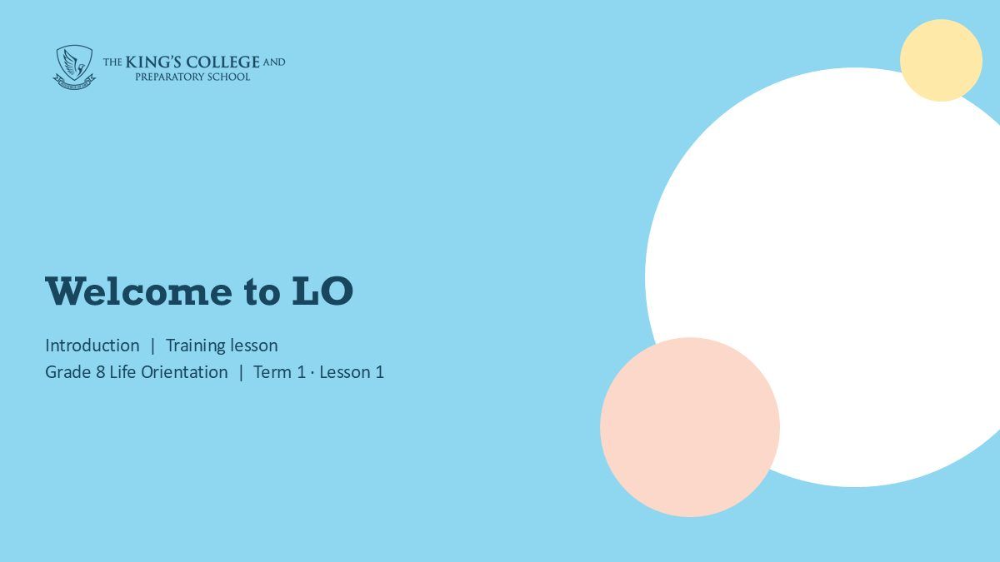

Term 1 · Lesson 1 · Training: how to answer LO questions
Welcome to LO
Start here
Today I will
- Read the mark allocation in brackets
- Build an answer: statement, reason, result
- Practise answering and mark my own work
Two learners know the same facts. One gets 4/10 and the other 9/10. What could the difference be?
Words to know
- Command word
- The instruction word in a question (state, explain, discuss, recommend). It tells you what kind of answer to give.
- Mark allocation
- The numbers in brackets after a question, e.g. (2 x 2) (4). They tell you how many answers and how much detail.
- Statement
- Your main point: a clear fact or idea that answers the question.
- Reason / explanation
- The 'because…' part that shows how or why your point is true.
- Result / outcome
- The 'so that…' or 'which leads to…' part that shows the effect.
- Connective
- A linking word such as because, which, so that, therefore, as a result.
Slides

Notes
Many learners think LO needs no studying because the answers are 'common sense'. That is not true. LO tests whether you understand the key ideas and can APPLY them to real situations. Learners who know the content AND know how to build an answer get the marks they deserve. Use this guide for every LO task, test and exam.
1. Always read the mark allocation first
Next to every question you will see numbers in brackets, for example (2 x 2) (4). The FIRST number tells you how many answers to give. The SECOND number tells you how many marks each answer is worth, which tells you how many parts each answer needs. The number on its own at the end is the total.
| Brackets | What it means | What to write |
|---|---|---|
| (2 x 1) (2) | Two answers, 1 mark each | Two short, separate facts. No explanation needed. |
| (1 x 2) (2) | One answer worth 2 marks | A statement + a reason or explanation. |
| (1 x 3) (3) | One answer worth 3 marks | A statement + a reason + a result. |
| (2 x 4) (8) | Two answers, 4 marks each | For EACH answer: statement + explanation + more detail + result. |
| (1 + 2) (3) | A question with two parts joined by 'and' | Part 1 (often a definition) for 1 mark, then Part 2 for 2 marks. |
2. Build your answer in blocks
Every mark needs its own piece of information. Think of an answer as building blocks that you join into ONE clear sentence:
- Statement (1 mark): your main point. 'Join a sport or club…'
- Reason / explanation (1 mark): how or why it is true. '…because you meet people with the same interests…'
- Result / outcome (1 mark): the effect or consequence. '…which makes it easier to start a friendship…'
- More detail (1 mark): an example or a deeper point. '…for example, chatting on the bus to away matches.'
Recommend ONE way a Grade 8 learner can make a new friend. (1 x 3) (3)
Answer: Join a sport or club ✓ because you meet people with the same interests ✓ which makes it easier to start a conversation and build a friendship ✓.
3. Link your ideas with connectives
Connectives are linking words that show how your ideas fit together: because, since, which, so that, therefore, as a result, this means, for example, whereas. A marker can only give the second and third marks if they can see the link. One linked sentence is better than three loose words.
4. Know your command words
| Marks | Command words | What the marker wants |
|---|---|---|
| 1 mark | Define, State, List, Name, Give, Identify, Mention | A short, correct fact or definition. No explanation. |
| 2 marks | Explain, Describe, Discuss, Define (2), Differentiate, Recommend, Suggest, Analyse/Assess (2) | A point PLUS its reason or effect. 'Differentiate' = one feature of EACH concept, joined by 'whereas'. |
| 3 marks | Recommend, Suggest, Advise | The action + how it works + the positive result. |
| 4 marks | Analyse, Assess, Evaluate, Critically discuss | Statement + explanation + more detail + result, all linked. |
Differentiate between self-image and self-esteem. (1 x 2) (2)
Answer: Self-image is how you see yourself ✓ whereas self-esteem is how much you value yourself ✓.
5. How the exam is set out
- Section A: short questions: multiple choice, matching columns, give the term, true or false (correct it if false). One mark per fact.
- Section B: a short source or scenario with questions that ask you to explain, describe and recommend, in short paragraphs.
- Section C: longer questions where you usually choose ONE of two. You must analyse or assess, using the full building blocks.
6. Mark your own work and reflect
After each written activity your teacher posts the memo on Google Classroom. Mark your answers in GREEN pen: tick each building block you included. Then complete the reflection box: Which questions lost marks? Was a reason, a result or an example missing? What will you do differently next time? This is how you get better marks in the exam.
The brackets tell you how many points to make and how much to say about each one.
Written practice
- 1.1State TWO things you must bring to every LO lesson.(2 x 1) (2)
- 1.2Define the term 'mark allocation'.(1 x 1) (1)
- 1.3Explain why it helps to be organised in high school.(1 x 2) (2)
- 1.4Recommend ONE way a Grade 8 learner can make a new friend in the first week of high school. In your answer, explain how it works AND what the result could be.(1 x 3) (3)
Test yourself
- What does (2 x 1) mean?
- Name the three building blocks of a 3-mark answer.
- Give two connectives.
Show answers
1. Two answers, one mark each. 2. Statement, reason, result. 3. Any two: because, which, so that, therefore, as a result, since.
Finished early?
Turn a short answer into a full-mark answer using the building blocks.
- Write this question in your LO book: 'Recommend ONE way a Grade 8 learner can feel less nervous in the first week of high school. (1 x 3) (3)'
- Write a statement, then add a reason with 'because' and a result with 'which' or 'so that', as ONE sentence.
- Label each block S (statement), R (reason) and Res (result), and underline your connectives.
- Challenge: rewrite it as a (1 x 4) answer by adding more detail, such as an example.